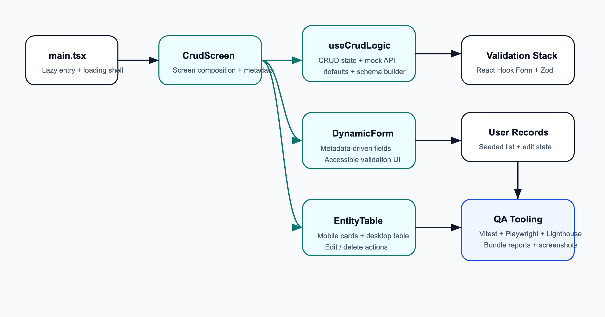
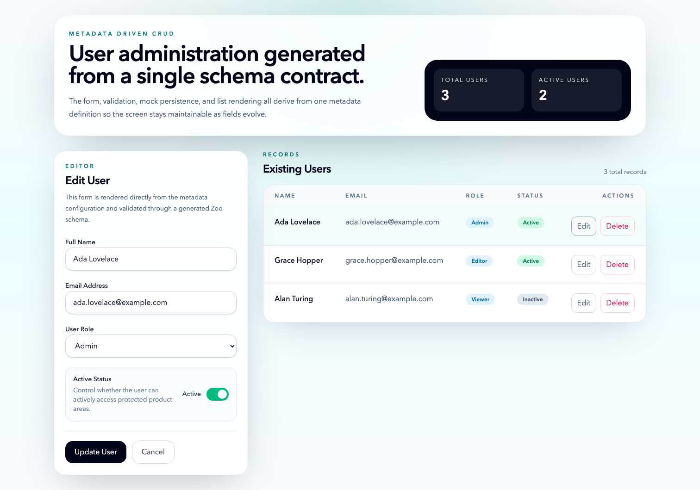
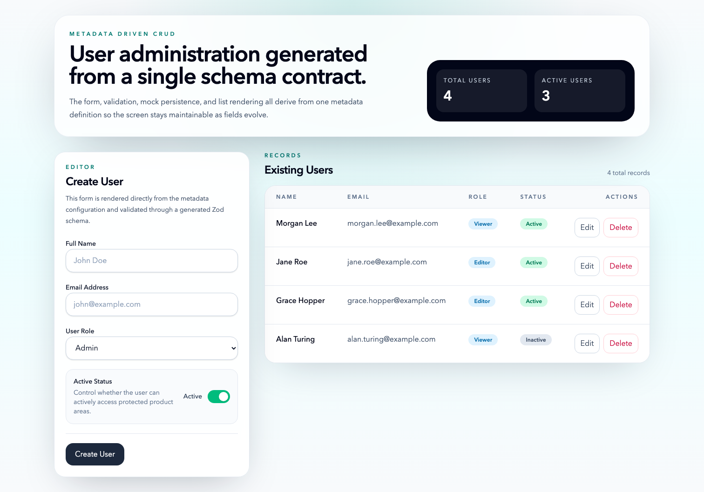

Date: March 19, 2026
This milestone demonstrates how AI can be used to document, validate,
optimize, and summarize a frontend application. The target application
is the metadata-driven React CRUD screen in
capstoneProject.
in the capstone project inside this folder , your task is to do below tasks:
Hands-On Tasks
1. Generate Documentation (JSDoc / README)
Goal: Reduce manual effort in code documentation
• Generate JSDoc comments for existing functions
• Create a complete README (setup, usage, architecture overview)
• Review and refine AI-generated documentation
2. Summarize PR Changes
Goal: Improve team communication using AI summaries
• Generate summaries from PR diffs
• Include impact, risks, and testing instructions
• Format into a reusable PR template
3. Generate Dependency Map
Goal: Understand complex codebases faster
• Analyze project structure using AI
• Identify module dependencies and shared utilities
• Produce a structured dependency map
4. Create Architecture Diagram
Goal: Visualize component relationships and flow
• Generate system design from codebase
• Convert into diagram (Mermaid / Figma / draw.io)
• Validate against actual implementation
5. Generate Unit + E2E Tests
Goal: Automate test coverage creation
• Generate unit tests for key components
• Create E2E test scenarios
• Validate and fix generated tests
6. Fix Lighthouse Issues via AI
Goal: Learn to interpret reports and apply fixes
• Run Lighthouse audit
• Use AI to explain issues
• Implement fixes and measure improvements
7. Optimize Bundle & Lazy Loading
Goal: Improve application performance
• Identify large bundles and unused code
• Implement code splitting and lazy loading
• Verify bundle size reduction
8. Analyze Performance Reports
Goal: Prioritize optimization efforts effectively
• Analyze Lighthouse / Web Vitals / DevTools reports
• Use AI to suggest improvements
• Rank fixes based on impact vs effort
Deliverable
AI-Assisted QA & Optimization Report
Goal: Demonstrate ability to analyze, improve, and validate application quality using AI
Deliverable Includes:
• Generated documentation (JSDoc + README)
• PR summaries
• Dependency map
• Architecture diagram
• Unit and E2E test cases
• Lighthouse report (before vs after improvements)
• Performance optimization summary (bundle size, load time, key fixes)
Document everything that you will do in docsmilestone3 with proofs or screenshots of deliverables, include original prompt also, you can reference docsmilestone2The task-specific AI prompts used during execution are recorded in assets/prompts/ai-prompts.md.
capstoneProject, with milestone 2 artifacts available for
reference in docsmilestone2.index.html to address SEO
gaps discovered in the Lighthouse baseline.docsmilestone3/assets/.JSDoc was added to:
capstoneProject/src/features/user-crud/types.tscapstoneProject/src/features/user-crud/useCrudLogic.tscapstoneProject/src/features/user-crud/DynamicForm.tsxcapstoneProject/src/features/user-crud/EntityTable.tsxcapstoneProject/src/features/user-crud/CrudScreen.tsxThe comments document the metadata contracts, hook return shape, schema/default builders, state helpers, and the purpose of the major UI components.
The canonical project README is now in ../capstoneProject/README.md. It includes:
The reusable template lives in ../capstoneProject/docs/PR_Summary_Template.md. The concrete milestone summary is stored in assets/PR_Summary_Milestone3.md.
Summary
This change turns the CRUD demo into a repeatable QA and optimization exercise by adding code documentation, a README, dependency/architecture docs, unit and E2E coverage, Lighthouse and bundle-report automation, and a milestone evidence pack.
Impact
npm run test,
npm run test:e2e, npm run capture:app, and
npm run audit:lighthouse.index.html.Risks
dist/assets.Testing Instructions
npm run testnpm run test:e2enpm run buildnode ./scripts/write-bundle-report.mjs --sourceDir ./dist/assetsnpm run audit:lighthouse -- --outputDir ./output/lighthouse --label prThe validated dependency document lives in ../capstoneProject/docs/Architecture_Dependency_Map.md.
| Module | Direct Dependencies | Responsibility |
|---|---|---|
src/main.tsx |
CrudScreen, styles.css,
react, react-dom |
Bootstraps the app and lazy-loads the feature entry. |
CrudScreen.tsx |
DynamicForm, EntityTable,
types.ts, useCrudLogic.ts |
Declares metadata and composes the screen. |
DynamicForm.tsx |
types.ts, react-hook-form |
Maps metadata into accessible inputs. |
EntityTable.tsx |
types.ts |
Displays current records as cards and table rows. |
useCrudLogic.ts |
react, react-hook-form,
@hookform/resolvers, zod,
types.ts |
Builds validation, defaults, and CRUD state. |
The Mermaid dependency graph source is stored in assets/diagrams/dependency-map.mmd.
The Mermaid source of the architecture diagram is stored in assets/diagrams/architecture-overview.mmd. A rendered SVG was created for export-friendly documentation.

Unit coverage now validates:
Proof: assets/final/logs/npm-test.txt
Playwright E2E coverage now validates:
Proof: assets/final/logs/npm-test-e2e.txt


Baseline artifacts:
Final artifacts:
| Category | Baseline | Final | Change |
|---|---|---|---|
| Performance | 95 | 95 | 0 |
| Accessibility | 100 | 100 | 0 |
| Best Practices | 96 | 96 | 0 |
| SEO | 90 | 100 | +10 |
| Metric | Baseline | Final |
|---|---|---|
| First Contentful Paint | 2.3 s | 2.3 s |
| Largest Contentful Paint | 2.4 s | 2.4 s |
| Speed Index | 2.3 s | 2.3 s |
| Total Blocking Time | 0 ms | 0 ms |
| Interactive | 2.4 s | 2.4 s |
index bundle with 129,043 unused
bytes.95
for performance, but the unused JavaScript opportunity was split across
form-vendor and react-vendor, reducing
combined wasted bytes to 116,335.90 to 100.Proof summaries:
| Measure | Baseline | Final | Change |
|---|---|---|---|
| Total raw assets | 268.57 kB | 266.13 kB | -2.44 kB |
| Total gzip assets | 82.14 kB | 81.39 kB | -0.75 kB |
| Largest JS file | 246.48 kB | 134.58 kB | -111.90 kB |
| Number of JS files | 1 | 5 | +4 |
@radix-ui/react-switch with a native
checkbox-based toggle to remove a production dependency that was heavy
for this small use case.CrudScreen from main.tsx and
preloaded the lazy chunk so the feature still loads quickly.react-vendor,
form-vendor, app-vendor, and feature-specific
chunks through Vite manualChunks.dist/assets.| Command | Result |
|---|---|
npm run test |
Passed: 8 tests |
npm run test:e2e |
Passed: 6 tests |
npm run build |
Passed |
npm run audit:lighthouse |
Passed |
Supporting files:
CHROME_PATH should be set
explicitly.